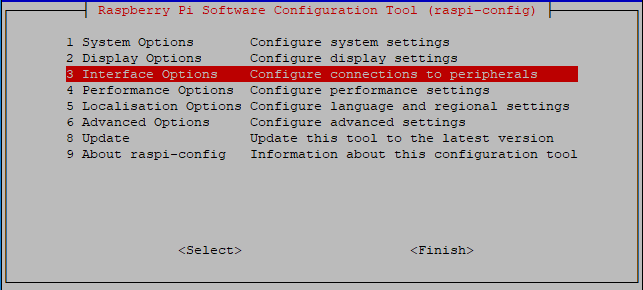
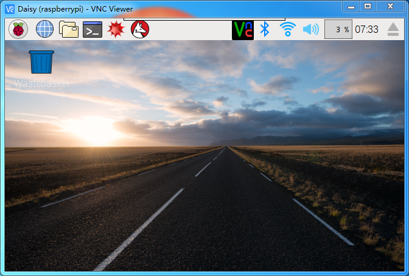
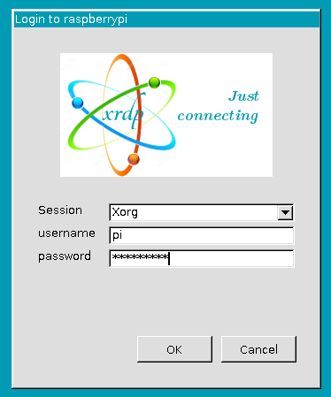

Remote Desktop¶
There are two ways to control the desktop of the Raspberry Pi remotely:
VNC and XRDP, you can use any of them.
VNC¶
You can use the function of remote desktop through VNC.
Enable VNC service
The VNC service has been installed in the system. By default, VNC is disabled. You need to enable it in config.
Step 1
Input the following command:
sudo raspi-config

Step 2
Choose 3 Interfacing Options by press the down arrow key on your keyboard, then press the Enter key.
Step 3
P3 VNC

Step 4
Select Yes -> OK -> Finish to exit the configuration.

Login to VNC
Step 1
You need to download and install the VNC Viewer on personal computer. After the installation is done, open it.
Step 2
Then select “New connection”.

{kind=link}
Step 3
Input IP address of Raspberry Pi and any Name.

Step 4
Double click the connection just created:

Step 5
Enter Username (pi) and Password (raspberry by default).

Step 6
Now you can see the desktop of the Raspberry Pi:
{kind=link}
That’s the end of the VNC part.
XRDP¶
Another method of remote desktop is XRDP, it provides a graphical login to remote machines using RDP (Microsoft Remote Desktop Protocol).
Install XRDP
Step 1
Login to Raspberry Pi by using SSH.
Step 2
Input the following instructions to install XRDP.
sudo apt-get update
sudo apt-get install xrdp
Step 3
Later, the installation starts.
Enter “Y”, press key “Enter” to confirm.

Step 4
Finished the installation, you should login to your Raspberry Pi by using Windows remote desktop applications.
Login to XRDP
Step 1
If you are a Windows user, you can use the Remote Desktop feature that comes with Windows. If you are a Mac user, you can download and use Microsoft Remote Desktop from the APP Store, and there is not much difference between the two. The next example is Windows remote desktop.
Step 2
Type in“mstsc” in Run (WIN+R) to open the Remote Desktop Connection, and input the IP address of Raspberry Pi, then click on “Connect”.

Step 3
Then the xrdp login page pops out. Please type in your username and password. After that, please click “OK”. At the first time you log in, your username is “pi” and the password is “raspberry”.
{kind=link}
Step 4
Here, you successfully login to RPi by using the remote desktop.

Copyright Notice
All contents including but not limited to texts, images, and code in this manual are owned by the SunFounder Company. You should only use it for personal study, investigation, enjoyment, or other non-commercial or nonprofit purposes, under the related regulations and copyrights laws, without infringing the legal rights of the author and relevant right holders. For any individual or organization that uses these for commercial profit without permission, the Company reserves the right to take legal action.